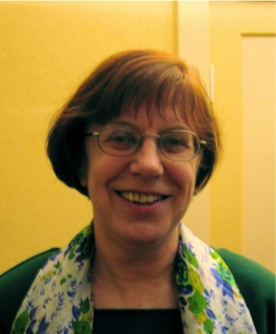

<!doctype html>
<html lang="de">
<title>Astrid Bartel</title>
<meta charset="utf-8">
<meta name="viewport" content="width=device-width, initial-scale=1">
<style>
	main {
		padding: 1.4rem;
		font-family: sans-serif;
		max-width: 46rem;
		line-height: 1.45;
		box-shadow: 0 0 2rem 0 #bbb;
		border-radius: 0.6rem;
		hyphens: auto;
	}

	nav ul {
		padding: 0;
		line-height: 1.45;
	}
	nav li {
		list-style: none;
		margin: 0.2em 0.4em;
	}

	@media (min-width: 48rem) {
		body {
			display: flex;
			justify-content: center;
		}
		nav {
			min-width: 10em;
			margin-right: 0.6em;
		}
		nav li {
			margin: 0.8em;
		}
	}

	h1 {
		margin-top: 0;
		line-height: 1.2;
	}
	.subtitle {
		margin-top: -1.5em;
		font-weight: bold;
		color: gray;
	}

	img {
		max-width: 100%;
	}
	img.cover {
		float: left;
		margin: 0 1em 1em 0;
		max-width: min(15em, 50%);
	}
</style>

<nav>
	<ul>
	  <li><a href="/index.html">Astrid Bartel</a></li>
	  <li><a href="/maedchen/index.html">Das Mädchen von der Quelle</a></li>
	  <li><a href="/stalin/index.html">Der halbierte Stalin</a></li>
	  <li><a href="/dem_leben_verpflichtet/index.html">Dem Leben verpflichtet</a></li>
	  <li><a href="/ungeteilte_freude/index.html">Des Lebens ungeteilte Freude</a></li>
	</ul>
</nav>

<main>
<h1>Astrid Bartel</h1>

Astrid Bartel geb. Gross wurde 1945 in Hermannstadt / Sibiu
(Rumänien) geboren. Nach Abitur Studium in Temeswar /
Timișoara (Rumänien). Mit den Eltern 1965 ausgesiedelt.
Studium der Germanistik und Geographie in Köln. Seit 1975
in Berlin. Verheiratet, vier Söhne.
<br />
<br />
Sie veröffentlichte ihr erstes Buch "Das Mädchen von der
Quelle" 2005 im hora-Verlag, Hermannstadt (Sibiu). Im März
2007 erschien im gleichen Verlag ihr zweites Buch "Der
halbierte Stalin - Hermannstädter Geschichten".
<br />
<br />
E-Mail: <a href="mailto:mail@astridbartel.de"
	 rel="self">mail@astridbartel.de</a>
<br />
<br />

